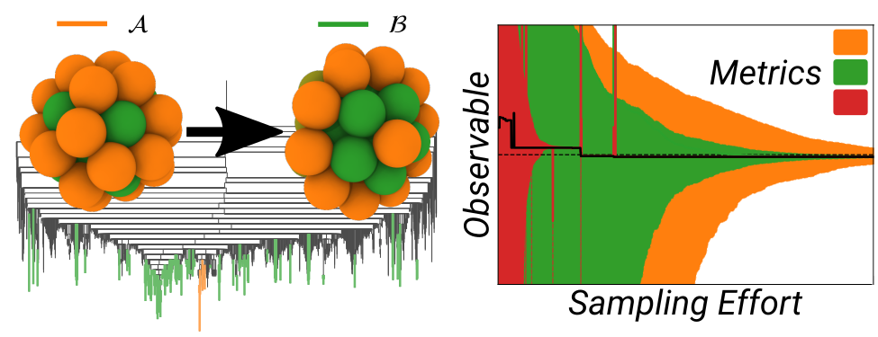
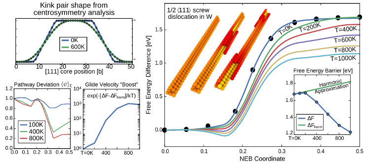
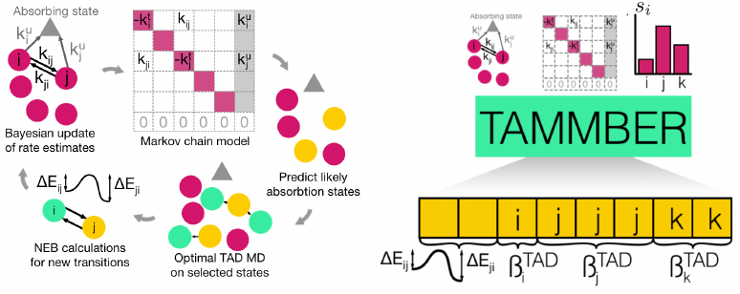

CV / Bio
I develop theoretical and computational approaches to connect the messy, jiggling atoms of real materials to their mechanical and thermodynamic properties. Materials transform via complex, collective atomic processes, but the rate at which these processes occur varies wildly, from nanoseconds to months. It is often essential to understand these "rare event" kinetics to connect theory and simulation to experiment. This requires discovery of the atomistic mechanisms and a model for the dynamics at finite temperature, both of which can be challenging. Traditionally this is done using domain expertise and scientific intuition; a current focus is combining this with statistical measures of uncertainty to build autonomous methods for massively parallel computers.
Automated approaches are instrinsically compatible with the current explosion in machine learning approaches to understand materials, but I also develop analytic models (human learning...). Applications to date have focused on the design of safer reactors for nuclear fusion and fission, whilst current interests include nanoclusters for heterogeneous catalysis and diffusion in random alloys.
News
11/20 Petr Grigorev joins the group He will use his expertise in atomistic simulations to spearhead UQ controlled exploration as part of the ANR MeMoPas project. Welcome Petr!
10/20 New paper accepted in NPJ Computational Materials With Danny Perez, LANL. Unsupervised method to calculate defect diffusivities, with a rare convergence measure.
10/20 New paper in Journal of Chemical Physics With Deepti Kannan, Daniel Sharpe and David Wales, U Cambridge. How first passage time distributions can be evaluated for highly metastable systems.
09/20 New paper in PRB Rapid Communications Primarily with Jan Janssen, Mira Todorova and Joerg Neugebauer of MPIE Dusseldorf. Neat mean field model for highly anharmonic free energies.
07/20 Is your Markov chain too metastable to analyze? Try PyGT!
05/20 First paper by Clovis Lapointe in PRMat. PhD student joint with MC Marinica. Machine learning prediction of defect formation entropy, with really impressive transferability. Well done Clovis!
03/20 New paper in Journal of Chemical Theory and Computation With David J Wales on converging numerically challenging reaction networks, with application to nanoclusters.
02/20 I am co-organising COSIRES 2021 (NEW DATES DUE TO COVID-19) With Cosmin Marinica (CEA Saclay) and Céline Varvenne (CNRS/CINaM) on the island of Porquerolles, France.
01/20 Upcoming invited talks:
WCCM 202021, SIAMMS2021 and MMM202021. Let me know if you'll be there.... next year.
Recent Publications
† = corresponding author(s)- Anharmonic effect on the thermally-activated migration of {10-12} twin interfaces in magnesium
- Y Sato, TD Swinburne, S Ogata and D Rodney† Materials Research Letters, 2021
- Femtosecond quantification of void evolution during rapid material failure
- J Coakley†, A Higginbotham, D McGonegle, J Ilavsky, TD Swinburne, JS Wark, KM Rahman, VA Vorontsov, D Dye, TJ Lane, S Boutet, J Koglin, J Robinson, D Milathianaki
Science Advances 2020 - Optimal dimensionality reduction of Markov chains using graph transformation
- D Kannan, DJ Sharpe, TD Swinburne† and DJ Wales† Journal of Chemical Physics 2020
- Statistical mechanics of kinks on a gliding screw dislocation
- M Boleininger†, M Gallauer, SL Dudarev, TD Swinburne, DR Mason and D Perez Physical Review Research 2020
- Automated calculation of defect transport tensors
- TD Swinburne† and D Perez NPJ Computational Materials 2020
- Anharmonic free energy of lattice vibrations in fcc crystals from a mean-field bond
- TD Swinburne†, J Janssen, M Todorova, G Simpson, P Plechac, M Luskin, and J Neugebauer Physical Review B Rapid Communications 2020
- Rare Events and First Passage Time Statistics From the Energy Landscape
- TD Swinburne† D Kannan, DJ Sharpe and DJ Wales Journal of Chemical Physics, 2020
- Ultraviolet catastrophe of a fluctuating curved dislocation line
- M Boleininger†, TD Swinburne, L Dupuy and SL Dudarev Physical Review Research 2020
- Machine learning surrogate models for prediction of point defect vibrational entropy
- C Lapointe†, TD Swinburne†, L Thiry, S Mallat, L Proville, CS Becquart, M-C Marinica† Physical Review Materials 2020
- Defining, calculating and converging observables of kinetic transition networks
- TD Swinburne† and DJ Wales Journal of Chemical Theory and Computation 2020
- Hybrid quantum/classical study of hydrogen-decorated screw dislocations in tungsten: Ultrafast pipe diffusion, core reconstruction, and effects on glide mechanism
- P Grigorev†, TD Swinburne, JR Kermode† Physical Review Materials 2020
- Quantum de-trapping and transport of heavy defects in tungsten
- K Arakawa†, MC Marinica, SP Fitzgerald, L Proville, D Nguyen-Manh, SL Dudarev, PW Ma, TD Swinburne, AM Goryaeva, T Yamada, T Amino, S Arai, Y Yamamoto, K Higuchi, N Tanaka, H Yasuda, T Yasuda, H Mori Nature Materials 2020
- Atomistic-to-continuum description of edge dislocation core: Unification of the Peierls-Nabarro model with linear elasticity
- M Boleininger†, TD Swinburne and SL Dudarev Physical Review Materials 2018
- Kink-limited Orowan strengthening explains the ductile to brittle transition of irradiated and unirradiated bcc metals
- TD Swinburne† and SL Dudarev Physical Review Materials 2018 (Editor's Suggestion)
- Self-optimized construction of transition rate matrices from accelerated atomistic simulations with Bayesian uncertainty quantification
- TD Swinburne† and D Perez Physical Review Materials 2018
- Unsupervised calculation of free energy barriers in large crystalline systems
- TD Swinburne† and M-C Marinica Physical Review Letters 2018
- Computing energy barriers for rare events from hybrid quantum/classical simulations through the virtual work principle
- TD Swinburne† and J R Kermode Physical Review B 2017
- Low temperature diffusivity of self-interstitial defects in tungsten
- TD Swinburne†, PW Ma and SL Dudarev New Journal Physics 2017
- Fast, vacancy-free climb of dislocation loops in bcc metals
- TD Swinburne†, K Arakawa, H Mori, H Yasuda, M Isshiki, K Mimura, M Uchikoshi and SL Dudarev Scientific Reports 2016
- Picosecond dynamics of a shock-driven displacive phase transformation in Zr
- TD Swinburne†, MG Glavicic, KM Rahman, NG Jones, J Coakley, DE Eakins, TG White, V Tong, D Milathianaki, GJ Williams, D Rugg, AP Sutton† and D Dye† Physical Review B 2016
Accepted
In Press
Software
- PyGT- Graph Transformation in Python
- Stable analysis of metastable Markov chains J Chem. Th. Comp. 2020 
- PAFI- Projected Average Force Integrator
- Anharmonic free energy barrier evaluations using in LAMMPS/MPI/C++ Physical Review Letters 2018 
- TAMMBER- Temperature Accelerated Markov Models with Bayesian Estimation of Rates
- Branch of ParSplice code for massively parallel rate matrix contruction Physical Review Materials 2018 
Team
- Petr Grigorev
Postdoc, uncertainty-driven exploration of defective materials within the ANR MEMOPAS project (PI: TDS).
- Clovis Lapointe
PhD Student, machine learning techniques for point defects. Co-supervised with Cosmin Marinica, CEA Saclay.
- Deepti Kannan (External Supervision, University of Cambridge)
MSc Student, Coarse graining techniques for Markov Models (under Prof. David Wales)
- Raynol Dsouza (External Supervision, MPIE Dusseldorf)
PhD Student, mean field bond models for anharmonic lattice vibrations (under Prof. Joerg Neugebauer)
Funding
- ANR MeMoPas (2020-2022)
PI on ANR JCJC project, Mesoscale models from massively parallel atomistic simulations: uncertainty driven, self-optimizing strategies for hard materials
- EuroFusion / IREMEV program
Computational resources (2020-2021) for studies of timescale estimation of microstructural evolution
- GENCI / IDRIS national supercomputing centers
Computational resources (2019-2020,2020-2021) for high-throughput studies of defect diffusion mechanisms
Job Openings
-
We have no current postdoc / PhD openings.
If you are interested in masters projects at AMU, or are considering an independent funding application, please email me.
Some Presentations
- Kink limited motion of line defects: multiscale simulation and analysis
- Applied analysis seminar, Imperial College London, February 2019 (Invited) Slides
- Kink limited Orowan strengthening and the brittle to ductile transition of bcc metals
- Oxford MFFP Meeting, September 2018 (Invited) Slides
- Uncertainty-driven construction of Markov models from accelerated molecular dynamics
- Advances in Computational Statistical Physics, CIRM, France, September 2018 (Invited) Slides
- Fast, vacancy-free climb of dislocation loops in bcc metals
- NUMAT conference, Montpellier, France, 2016 Slides
- Multiscale analysis of nonlinear dislocation models
- MMM conference, Berkeley, USA, 2014 Slides